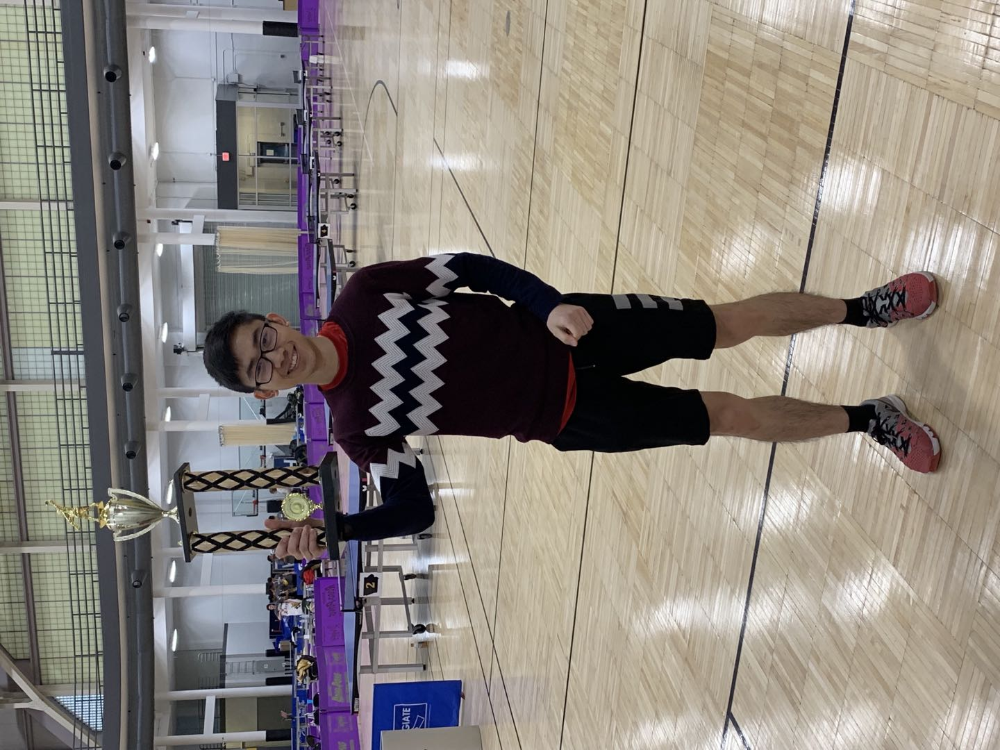

2018-19 NCTTA Midwest Regional Championships
Zhengqi(Drago) Dong
The Ohio State Universitydong.760@osu.edu
drago1234
zhengqi-dong
I am currently a senior-year undergraduate student at The Ohio State University, pursuing a major in Computer Science and Engineering (with Artificial Intelligence as my specialization) and a minor in Statistics. Before studying abroad at OSU, I obtained my high school degree from Foreign Language School Attached to Guangxi Normal University.
Particulary, my interests particularly focus on High-Perfromance Deep Learning, Object Detection, and Data Analysis. Besides that, I am actively seeking the opportunies to gain more hand-on experience about Robotic Control and SLAM. So far, I am proficient in spearking Chinese and English.
I am actively looking for an internship in summer 2021. Please feel free to email me if you think I am a good fit to the team!
News
09/2020-12/2020: Employed as Instruction Assistant for CSE 3461: Computer Networking and Internet Technologies09/2020: I complished the Working Behavior test of which was requested by Bloomberg Recruit Team, and here is the test result, hosted by Plum, that I would like to share with any potential HR that has interest to know about my working behavior/attributes.
Projects
Course Project, CSE 5525: Speech and Language Processing

This is a space left for the ongoing course project for CSE 5525, Autumn 2020.
More details comming soon after Oct. 14th, when we will submit our project proposal!
This is a space left for the ongoing course project for CSE 5525, Autumn 2020.
More details comming soon after Oct. 14th, when we will submit our project proposal!
Course Project, CSE 5194: High-Performance Deep Learning
This is a space left for the future course project for CSE 5194, Autumn 2020.
This is a space left for the future course project for CSE 5194, Autumn 2020.
Course Project, CSE 5914: AI Capstone
This is a space left for the future course project for CSE 5914, Autumn 2020.
This is a space left for the future course project for CSE 5914, Autumn 2020.
Professional Experiences
Favorite Quote
- Don't waste time dreaming of great far-away opportuniies; start to work and improve yourself right now. Someday a small opportuniies will come, and those are often the beginning of greate and amazing things.
- "A small group of dedicated people can change the world!" --A friend of mine
- 明天和意外，你永远不知道哪个先来， 下辈子拼的就是健康。
- "Imagination is more important than knowledge." --Alber Einstein
- "You MULTIPLY your time by giving yourself the EMOTIONAL PERMISSION to spend time on things TODAY that will give you more time TOMORROW" --Rory Vaden
- "I am not afraid of a person who knows 10000 kicks. But I am afraid of a person who knows one kick but practices it for 10000 times." --Bruce Lee
- You don't measure, you don't know; If you don't profile, you can't see.
- "Premature Optimization is the root of all evil." --Knuth
- “世界上只有一种真正的英雄主义，那就是在认清生活的真相后依然热爱生活。” --罗曼·罗兰 《米开朗琪罗》
- “When he talks, people listen” -- Warren Buffet
- "运筹帷幄之中，决胜千里之外." -- 司马迁
- 20% of your activitie will account for 80% of your results. -- Pareto principle
- Get the most important thing done at first! -- "Organize Tommorrow Today"